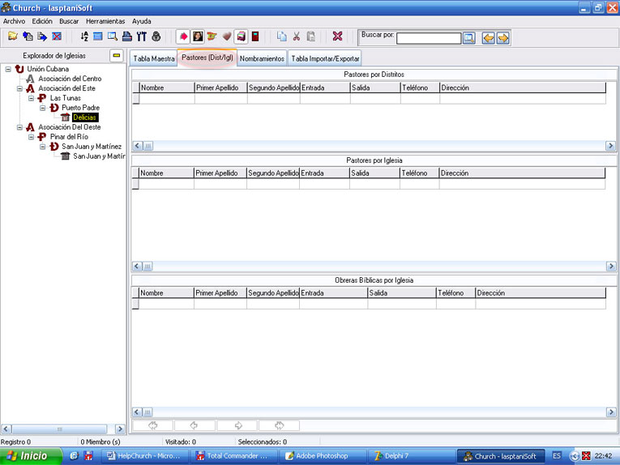

Pastores Dist/Igl

Figura 10. La pestaña Pastores (Dist/Igl).
Es la ventana que cuenta con un navegador y tres rejillas de datos para almacenar la información de los pastores por distritos, los pastores por iglesias y las obreras por iglesias (no imprimible en esta versión).